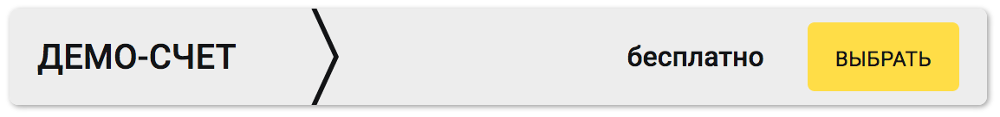
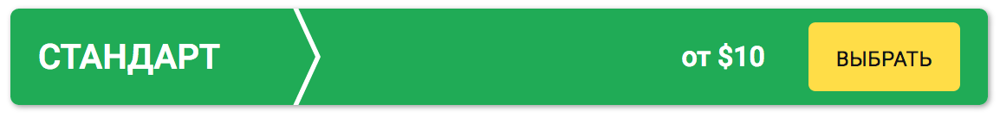

Меню
Меню Брокеры
Брокеры Стратегии
СтратегииBinomo
 |
|
| Мин. депозит: 5$ | Активы брокера: 100+ |
| Мин. ставка: 1$ | Валюта счета: USD, EUR, RUB |
| Прибыльность: 87% | Демо счет: Есть |
| Бонус: первые 5 сделок со страховкой 100% | |
| Пополенение счета: Кредитные и дебетовые карты, Qiwi, Neteller, Webmoney, СМС, Яндекс Деньги, ПриветБанк, BitCoin, LiteCoin | |
| Вывод со счета: Кредитные и дебетовые карты, Qiwi, Neteller, Яндекс Деньги, BitCoin, LiteCoin | |
Компания Binomo занимает лидирующие места среди инновационных и развивающихся брокеров на рынке опционов. Фирма создана в 2014 году и за это время смогла завоевать отличную деловую репутацию на рынке. Прекрасные аналитические сервисы, удобный функционал и широкий спектр активов позволяет зарабатывать на этой площадке хорошие деньги. Binomo брокер бинарных опционов, который предлагает собственную продвинутую платформу с широкими возможностями для торговли бинарными опционами.
Пошаговая инструкция по регистрации на Binomo.com сайте.
Конкурентные преимущества брокера Биномо (Binomo.com)
Система предлагает трейдерам работать с отличными условиями:
- минимальный депозитный счет в 10$;
- возможность пополнения счета через кредитные и дебетовые карты, Qiwi, Webmoney, СМС, Яндекс.Деньги и др.;
- минимальная ставка в 1$;
- уникальный режим трейдинга «Нон стоп»;
- возможность работы в выходные дни;
- быстрые выплаты до 87%;
- есть возможность открытия демо счета;
- депозитные счета с разными валютами (рубли, доллары или евро);
- свыше 50 разнообразных активов для торговых операций;
- вывод заработанных денег через Яндекс.Деньги, дебетовые карты Maesto и Visa Webmoney, СМС или Qiwi;


Стабильная работа и комфортный сервис Биномо
Своим клиентам брокер Биномо предлагает:
- оперативный сервис круглосуточной онлайн поддержки;
- возможность бесплатного обучения торговле бинарными опционами;
- постоянное пополнение актуальной аналитики;
- прозрачные и честные условия сотрудничества;
- понятные и простые схемы вывода заработанных средств;
Особенности бонусов брокера Binomo
Компания Биномо предлагает клиентам, открывшим счета 2 вида бонусов. Размер бонусного вознаграждения может составлять до 75% от первоначально внесенного депозита. В Binomo есть и еще один очень важный и интересный бонус для инвесторов. Он предлагает 100% страховку трейдерам на первые 5 сделок в данной системе. Каждый сможет спокойно забрать заработанную прибыль от первых 5 контрактов себе, а если потерпит убытки, то брокер возместит их за счет собственных средств. Благодаря этому бонусу, многим клиентам удается уже в первый день в несколько раз увеличить сумму первоначального депозита.
Официальный сайт Binomo строго соблюдает все торговые условия и пункты клиентских соглашений. Фирма имеет соответствующую лицензию и работает под юрисдикцией российской комиссии ЦРОФР.
Выбирая Binomo, трейдеры получают надежность стабильность, качественный сервис и инновации.
Обзор официального сайта Биномо
Ознакомиться с условиями работы Биномо брокера можно на официальном портале —www.binomo.com. Основатели площадки приложили немало усилий на создание оптимального сервиса для работы с бинарными опционами. Улучшение дизайна самого сайта и расширение интерфейса торгового терминала позволяет обеспечить комфортные условия для трейдинга.
Спокойная и приятная цветовая палитра, без ярких вставок и навязчивой рекламы позволяет сосредоточиться на проведении операций.
Первая страница сайта предлагает обширный список наград, полученных этим популярным брокером в течение всего 2 лет работы на рынке. Они объективно свидетельствуют о высоком профессиональном уровне обслуживания и отличном сервисе.
Тут же, без регистраций и СМС, можно протестировать demo вариант торговой платформы, чтобы проверить возможности площадки и ее испытать ее инструментарий для проведения сделок с бинарными опционами. Для получения полного доступа в систему, нужно пройти процедуру регистрации Биномо.
Ниже на главной странице представлены данные о гарантиях Binomo. Есть тут функционал для общения со службой техподдержки.
Простая и понятная форма для регистрации на сайте позволяет за несколько минут пройти все формальности. После ввода личных данных и внесения депозита можно приступать к сделкам и начинать торговые операции на Binomo.com!
На основной странице официального сайта представлена подобная информация о бонусных программах этого брокера. Заботясь о своих клиентах, владельцы данного ресурса стараются создать максимально комфортные условия для работы с разными видами финансовых инструментов. Широкий спектр приятных бонусов, удивляет даже профессиональных трейдеров. К услугам клиентов отличный перечень «сюрпризов»:
- безрисковых сделок
- страхования опционов
- выгодных инвестиций
- 20 бесплатных опционов
И это лишь небольшая толика приятных подарков от Биномо!
Даже новички, не имеющие солидных ресурсов, могут успешно начать торговлю на этой площадке. Минимальные ставки в 1 USD и депозит всего в 10 USD предоставляет комфортные условия для работы. Совершая пробные сделки по 1 доллару, можно освоиться на рынке, получая отличные знания и опыт для проведения более объемных операций на платформе binomo.com.
Воспользовавшись уникальной возможностью трейдинга в режиме «Non Stop», можно параллельно заключать множество сделок. Площадка работает и по выходным, позволяя зарабатывать и в свободное время.
В нижней части основной страницы предлагается список возможных способов вывода средств, а также перечень вариантов торговых активов.
Уникальная платформа Binomo вывела мобильную торговлю на новые горизонты. Любой трейдер может на официальном сайте быстро закачать мобильное приложение для работы с разными типами гаджетов с iOS или Android. Данный продукт обеспечивает полноценный интерфейс, аналогичный базовой версии платформы для ПК. Установив приложение на мобильный смартфон, можно сразу зарегистрироваться на площадке.
На официальном портале Binomo com можно найти:
- свыше 100 вариантов активов
- высокий (до 87%) уровень доходности операций
- удобный функционал для вывода средств (не больше суток)
- инструментарий для работы со счетами в RUB, USD либо EUR
- сервисы связи со специалистами круглосуточной службой техподдержки (свободно общающихся на русском)
- бесплатные курсы обучения с опытными трейдерами
- ежедневные сводки, обзоры и торговые сигналы от профессиональных аналитиков
Регулирование и лицензирование работы Binomo.com
Площадка регулируемого брокера Биномо контролируется российским ЦРОФР. Свою деятельность эта компания осуществляет на основе лицензии RU 0395 AA Vv 0080.
Данный документ подтверждает соответствие сервисов Биномо, всем требованиям и нормативам, предъявляемым к компаниям, оказывающим услуги на финансовых рынках. ЦРО ФР выполняет постоянный контроль работы этого брокера, формируя условия для безопасности личной информации о клиентах, их операциях и денежных средствах.
Надежные криптографические протоколы HTTPS обеспечивают дополнительные условия безопасности для работы с сайтом «Binomo».
Такие меры безопасности и высокий уровень сервисов Binomo.com подтверждают солидность и надежность этой компании. Здесь постоянно внедряют новые технологии и инновации для обеспечения отличных условий торговли. Такой качественный сервис является гарантом успешных операций на рынке бинарного опционов.
Несмотря на то, что официальный офис штаб-квартиры компании «Биномо» расположен на Кипре: VasileosPavlou, 60 AgiosDometios, 2360, Nicosia, Cyprus, ее основным направлением является обслуживание русскоязычных клиентов.
Особенности создания учетной записи на «Binomo»
Процесс создания своей учетной записи на официальном сайте Биномо требует несколько минут.
В соответствующем окне нужно вести электронную почту и пароль для входа в Личный кабинет. Затем выбирается валюта счета, а также размер стартового депозита, который нужно перечислить для начала проведения операций. Клиент проставляет галочку, согласившись с условиями работы на данной площадке, и выбирает тип счета «реальный» или «demo».
В предыдущих публикациях можно узнать, как открыть demo счет в Binomo. Этот демонстрационный режим предлагает все возможности реального торгового терминала. Так можно неограниченно долго изучать работу площадки и ее особенности. Когда клиент чувствует уверенность в своих силах, он может переходить к торговле с настоящими деньгами, пополнив соответствующий счет выбранной валютой.
По завершение процесса регистрации на e-mail клиента отсылается письмо, где необходимо просто нажать на ссылку, чтобы стать полноценным клиентом этого брокера. После такой процедуры на Binomo.com, вход в свой личный кабинет клиенты оусществляют через меню, расположенное справа (вверху) на официальном сайте.
Выполнив на сайте Биномо вход в сервис личного кабинета, клиент имеет возможность изменять персональную информацию, формировать заявки по выводу денег со счетов, а также просматривать все архивы торговых сделок. Тут же можно легко связаться с сервисом техподдержки для решения любых вопросов.
Виды счетов на сайте Биномо
Эта брокерская площадка предлагает комфортные сервисы работы с разными типами счетов. Они отличаются наличием бонусов, привилегий, которые зависят от суммы пополнения.
- «DEMO» счет
Такой бесплатный счет позволяет детально изучать возможности площадки «Binomo», он обеспечивает:
- Простой способ освоения всех особенностей платформы, без перечисления реальных денег
- Возможность пополнения виртуальными средствами (на сумму, эквивалентную 1 тыс. USD или EUR, либо 50 тыс. RUB) демо-счетов
- Полноценный доступ к интерфейсу «Биномо», позволяющий знакомиться с инструментарием и работой с разными видами активов
- Удобный функционал для отработки навыков проведения сделок с финансовыми инструментами
- Прекрасные стартовые условия для начала работы в сфере трейдинга
О преимуществах demo счетов у официального сайта Биномо уже было рассказано раньше. Такой инструмент позволяет удобно и быстро освоиться на площадке этой брокерской компании.
- Счет «СТАНДАРТ»
Данный тип счетов будет идеальным для работы новичков. Пополнив депозит всего на 500 рублей, можно торговать на «Binomo», зарабатывая отличные прибыли. На стандартные счета любые клиенты могут свободно вносить средства, чтобы получить полноценный доступ к функционалу торговой площадки. Такие счета позволяют:
- Заключать любые сделки (начиная с 1 USD)
- Выводить прибыль в течение 3 дней
- Работать с наиболее популярными видами финансовых активов (с доходностью до 85%)
- Участвовать в различных турнирах и розыгрышах
- Делать пополнения на любые суммы
- Пользоваться обширной линейкой бонусов «Binomo» при каждом пополнении
- Обращаться в любое время за помощью в online-сервисы техподдержки
Владельцы таких счетов могут участвовать в разных турнирах и конкурсах, а также использовать бонусы за пополнение по своему усмотрению.
- Счет «ЗОЛОТОЙ»
Все, кто внесет на депозит более 30 тыс. RUB, автоматически получают привилегии «золотого» счета. В дополнение к стандартным сервисам, владельцы такого статуса, смогут пользоваться целым спектром привилегий, расширяющих возможности для трейдинга:
- Лучшими бонусами за пополнение депозита
- Высокой доходностью активов (до 86%)
- Ускоренным процессом вывода средств (в течение 24 часов)
- Расширенным перечнем активов для торговых операций
- Страхованием инвестиций за счет бонусных средств
- Услугами персонального менеджера, максимально оперативно решающего любые вопросы и проблемы клиента
- Готовыми стратегиями и детальной аналитикой профессиональных трейдеров
- Еженедельным 5% возмещением убытков (cash-back) через реальные деньги
Клиенты с «золотым» счетом могут ускоренно выводить свои средства, получать увеличенные бонусы, а также использовать в работе высокодоходные сделки и возмещать 5% убытков.
- VIP счет
Хайроллерам, оперирующим большими суммами депозитов, площадка «Биномо» предоставляет индивидуальный режим обслуживания и эксклюзивный сервис. Такие клиенты могут пользоваться:
- Выводом средств за 4 часа
- 100% бонусами за внесение денег на счет
- Максимально возможным перечнем активов
- Аналитической онлайн-поддержкой через Скайп
- Фиксированной доходностью до 87%
- Страховкой операций через реальные деньги
- Эксклюзивными опциями, которые предлагаются лишь ВИП-трейдерам
- Еженедельной 10% компенсацией убытков (cash-back) реальными деньгами
Владельцам привилегированного ВИП статуса «Биномо» предлагает ускоренный (4 часа) вывод средств, максимальный спектр торговых инструментов и страховку операций, возвращая до 10% сумм от убыточных сделок.
Вывод средств с сайта Binomo
Перечисление прибыли с площадки брокера Биномо работает без задержек, максимально быстро и точно, заслуживая благодарности ее клиентов. Оперативное решение любых проблемных ситуаций службами технической поддержки обеспечивает высокий уровень сервиса.
Трейдеры могут выводить деньги на VISA и MasterCard, пользоваться услугами систем электронных переводов Webmoney, Киви или Yandex.Деньги. Заявку на вывод легко сгенерировать через личный кабинет.
Следует акцентировать внимание инвесторов, на том, что после пополнении счета и попытке вывода средств без единой операции, платформа удерживает комиссионные 10% от выводимой суммы. В остальных случаях сайт Биномо проводит пополнение и вывод денег абсолютно без комиссий, часто взимающихся некоторыми другими брокерами.
ИТОГИ
Мы детально проанализировали возможности официального сайта Биномо. Эта инновационная брокерская площадка заслуженно занимает ведущие позиции среди ресурсов, обслуживающих операции с бинарными опционами.
Невзирая на небольшой срок работы (2 года) здесь создан отличный, скоростной функционал и надежные сервисы, обеспечивающие качественную поддержку клиентов. Отсутствие отрицательных отзывов о площадке подтверждает высокий авторитет и отличное качество обслуживания на этом портале.
Достоинства Биномо:
- минимальная сумма депозита 10 USD
- цена опционов от 1 USD
- собственный уникальный функционал торговой платформы
- возможность осуществления сделок по выходным
- бесплатные обучающие курсы
- есть сервис трейдинга в режиме Non Stop
- вывод от 500 рублей
- неограниченная работа с demo счетом
- бесплатные турниры на demo счетах (по четвергам).
Недостатки брокера Биномо
- не выявлены